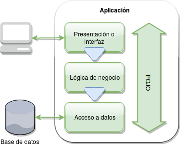

aplicamos el principio de separación de responsabilidades (separation of concerns) que consiste en asegurarse que cada clase, componente, etc. tenga una responsabilidad bien definida, es decir, que sus funcionalidades o métodos no hagan más de un tipo de actividad, por ejemplo, dibujar la página web y guardar datos en una base datos.
La separación de responsabilidades se aplica en diferentes formas y niveles. En este caso la usaremos para separar tres responsabilidades bien definidas:
Adicionalmente tenemos un tipo de objeto que transporta la información entre estas capas de nuestra aplicación, para reducir el acoplamiento. Son los llamados Data Transport Object (DTO) o Value Object (VO) que se implementan como objetos planos de java (Plain Old Java Object o POJO), es decir, simples contenedores de datos, sin métodos o comportamiento.
Un tipo de objeto muy parecido a los DTO son las entidades (entity) que representan tablas o registros en la base de datos. La mejor práctica es extraer un entity de la base de datos y asignar algunos de sus valores a un DTO equivalente para retornarlo a la capa superior en lugar de retornar el entity. Es una práctica discutible porque por ser tan parecidas las entities con los DTO, el código parecerá duplicado; en su favor argumentamos que evita que el cliente reciba información muy detallada de la base de datos o campos que no queremos que reciba (ej: hash del password), reduciendo así el acoplamiento y mejorando la abstracción.
Usaremos un proyecto Maven que es genérico y puede usarse en eclipse, Netbeans, IntelliJ IDEA o cualquier otro IDE Java, incluso con editores de texto de línea de comandos. Tenemos por lo menos tres formas de crear el proyecto:
En la siguiente ventana selecciona las librerías Web (clases para páginas y servicios web), JPA (Hibernate y otras librerías para acceder a la base de datos) y H2 (base de datos en memoria para facilitar el desarrollo y pruebas). Presiona el botón «Finish» para completar la generación del proyecto: